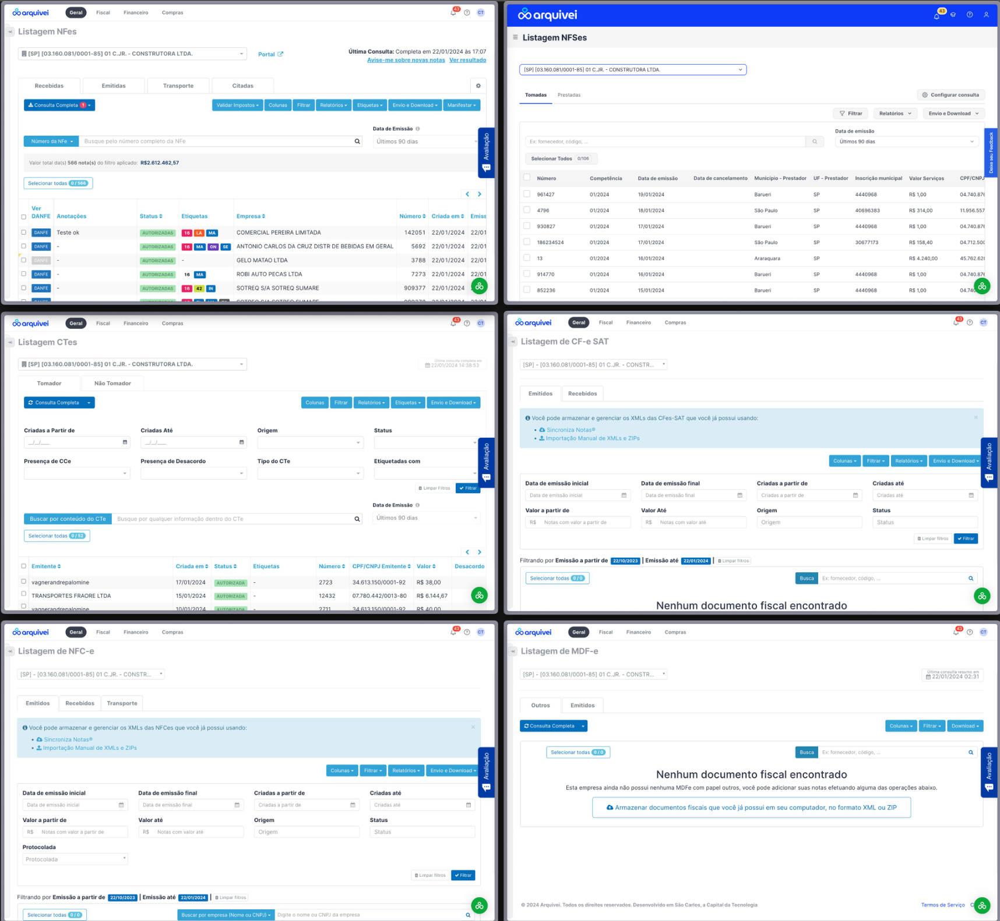
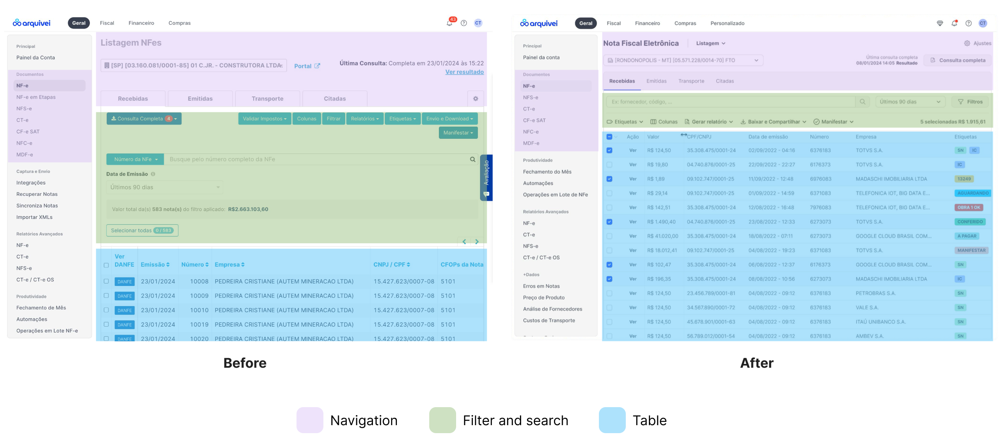

Redesigning the Listing Experience of a SaaS Platform
Standardized a fragmented listing interface across a high-volume fiscal document platform — building a scalable framework that reduced operational friction for thousands of daily users.
Company
Qive (former Arquivei)
Role
Product Designer
Collaborators
Product · Engineering · Data
Scope
Information Design · UX Strategy · Design Systems
75K+
Business accounts on the platform
Millions
Fiscal documents processed daily
7
Listing modules standardized
32
Microfeatures standardized across lists
Overview
Qive (former Arquivei) is one of Brazil's largest fiscal document automation platforms, serving over 75,000 business accounts and processing millions of fiscal documents daily.
As the product expanded, listing interfaces became increasingly inconsistent across the platform. Different teams created independent table structures, behaviors and layouts over time — resulting in fragmented experiences that made workflows harder to scan, compare, and operate efficiently.
The listing experience had become a critical operational surface, especially for users managing large document volumes daily. This initiative focused on creating a scalable listing framework that could standardize interaction patterns while improving usability and operational efficiency.
Key insight
Listing tables had evolved independently across teams, each with different behaviors
Users had to repeatedly adapt to inconsistent interaction patterns
The lack of consistency increased cognitive load during operational workflows
Problem
The problem was not only visual inconsistency — it was operational friction.
Users interacted with large amounts of data every day, but the platform lacked standardized behaviors across the interfaces they relied on most.
What was missing
Consistent table layouts and column structures
Unified filtering and search patterns
Coherent information hierarchy across modules
Standardized bulk actions and status visualization
Predictable responsive behavior across viewport sizes
For users
Important information was difficult to scan at a glance
Teams recreated similar solutions independently, without shared standards
The experience became harder to scale consistently across modules
Goal
Create a scalable listing framework that improves usability, consistency, and operational efficiency across high-volume workflows.
More consistent table behavior across the platform
Faster information scanning for operational users
Improved usability for high-volume, repetitive tasks
Better adaptability for future product expansion
Before — listing tables built independently across teams, each with different layouts and interaction patterns
Approach
Before proposing any new structure, we mapped the listing patterns already existing across the platform and analyzed how users interacted with high-volume operational tables in real workflows.
The analysis focused on
Information density and column usage across modules
Most repeated user actions and frequently accessed columns
Filter usage patterns and search behaviors
Visual hierarchy and interaction consistency across the product
The redesign also considered the broader operational ecosystem surrounding the listing experience — including exports, document actions, tagging systems, bulk operations, and configuration flows. Because these interactions were deeply interconnected, consistency became a structural requirement rather than a purely visual improvement.
The key questions driving the process: Which information is actually critical for decision-making? Which actions do users perform most frequently? How can the interface support faster scanning in dense workflows — and how much information should remain visible by default?

Mapping existing listing patterns — analyzing information density, filter usage, and interaction consistency across modules
Key insight
The listing experience functioned as a complex operational ecosystem, not a single interface
Fragmentation increased as new actions and workflows were added independently by different teams
Standardization needed to support both scalability and operational flexibility simultaneously
Decision Based on Data
To support prioritization decisions, we analyzed usage patterns and feature interaction frequency in partnership with the Data team. The data revealed clear concentration around a small number of repeated behaviors — which made the path forward much more concrete than gut instinct alone could have.
What the data revealed
A limited set of filters represented the vast majority of user interactions
A small number of columns had high operational importance across all user types
Several fields had extremely low usage frequency — occupying visual real estate without earning it
Visual density in the existing layout was directly affecting scan efficiency
This allowed us to separate content into three clear tiers: essential operational information, secondary contextual information, and rarely accessed data. The interface structure was then reorganized around those priorities — surfacing what matters most, without hiding what users occasionally need.
Key insight
High-density interfaces require prioritization, not simplification alone
Frequency of use should directly influence visual hierarchy decisions
Data-heavy products benefit from progressive disclosure — revealing depth without leading with it
Final Solution
The redesign established a scalable listing framework focused on consistency and operational usability. Rather than redesigning each module independently, the work produced a shared structural logic that could be applied across the platform.
The new framework introduced
Standardized table structures with a shared column and spacing logic
Unified filtering and search behaviors across all listing surfaces
Consistent action positioning — bulk actions, exports, and configuration in predictable locations
Improved spacing and readability for dense data rows
More efficient information hierarchy, surfacing critical data before secondary fields
Responsive behaviors for different viewport sizes

Before → After — the redesigned NFe listing view, with color-coded layers showing the three standardized structural components: navigation, filter & search, and table
Improving Use of Screen Space
One significant improvement involved restructuring how information occupied the available table area. The before state had critical information competing visually with secondary fields, inconsistent white space distribution, and dense layouts that reduced scanability.
The updated structure improved column prioritization, data grouping, alignment consistency, and visual rhythm across rows — creating a more balanced relationship between information density and clarity.
Key insight
Consistency reduced the need for repeated interpretation, allowing users to focus on operational tasks rather than re-learning the interface
A shared structural logic is more valuable than isolated module improvements
Results
The new listing framework became the foundation for future listing implementations across the platform — not just a one-time fix, but a structural standard.
More cohesive table behaviors across modules, reducing the learning curve when switching between product areas
Reduced interface fragmentation — teams stopped recreating listing solutions independently
Improved scanability for operational workflows, particularly for users managing large document volumes daily
Better scalability for future product growth — new listing surfaces could be built from the shared framework rather than from scratch
Shared structural standards established between design and engineering, reducing ad-hoc implementation decisions going forward
Key insight
Design systems are not only visual — they also standardize operational behavior
Structural consistency improves learnability at scale, reducing the cost of onboarding new users to complex surfaces
Operational products benefit most from reusable interaction frameworks, not one-off redesigns
Reflection
One of the biggest challenges of this project was balancing standardization with flexibility. Different teams had legitimate operational needs — but excessive customization was creating the very fragmentation we were trying to solve. The tension between "consistent enough to be predictable" and "flexible enough to be useful" drove most of the design decisions.
The project reinforced how important shared interaction principles are in growing SaaS ecosystems — especially in products where users spend hours navigating large datasets daily. The listing surface isn't glamorous, but for operational users, it's where they live.
Takeaways
Data-heavy interfaces require clear prioritization strategies — not just more whitespace
Consistency is critical in operational workflows where users move quickly and repetitively
Visual hierarchy should reflect usage frequency — what users touch most should feel most accessible
Information density can coexist with clarity — when the structure is intentional
Screen loading and responsiveness are also part of the overall user experience — performance is UX
If revisiting this initiative, I would push earlier for quantitative measurements — scan efficiency metrics, interaction heatmaps, time-to-completion benchmarks, and comparative workflow analysis — to strengthen long-term usability validation and give the business case more concrete teeth.